PASOS PARA INSTALAR UBUNTU
Bienvenido(a)
Esta es una guía escrita para los usuarios nuevos que empezarán a hacer el uso por primera vez del sistema operativo Ubuntu.
El objetivo es dar la facilidad a todos los usuarios al momento de instalar el sistema operativoya que es muy facil su manejo.

Acontinuación verémos 12 pasos para la instalación del sistema operativo Ubuntu:
1. Descarga el archivo ISO de Ubuntu. Puedes obtener el archivo desde el sitio web de Ubuntu. Un archivo ISO es un archivo de imagen en CD al que necesitarás grabar antes de usar. Hay dos opciones disponibles desde la página de Ubuntu (también puedes comprar los CD oficiales de Ubuntu que vienen en paquetes de 10).
La versión 10.24 LTS tiene actualizaciones continuas y ofrece soporte técnico. Además, está
programada para tener validez hasta abril de 2017. Esta opción te dará más compatibilidad con
tu hardware existente.
 La 13.04 es la última versión que desarrolló Ubuntu, pero ofrece soporte limitado. Aunque tiene las características más actuales, es posible que no funcione con todo el hardware. Esta versión está dirigida a los usuarios de Linux que tienen experiencia.
Si tienes una PC con Windows 8 o una con un firmware UEFI, descarga la versión de 64 bits. Por otro lado, para las computadoras más antiguas se deben descargar la versión de 32 bits.
La 13.04 es la última versión que desarrolló Ubuntu, pero ofrece soporte limitado. Aunque tiene las características más actuales, es posible que no funcione con todo el hardware. Esta versión está dirigida a los usuarios de Linux que tienen experiencia.
Si tienes una PC con Windows 8 o una con un firmware UEFI, descarga la versión de 64 bits. Por otro lado, para las computadoras más antiguas se deben descargar la versión de 32 bits.
 Despues de haber elegido seleccionamos burn.
Despues de haber elegido seleccionamos burn.
 2. Graba el archivo ISO. Abre el programa de grabación que prefieras. Existen diversos programas gratuitos y pagos que pueden graban un archivo ISO en un CD o DVD.
Windows 7,8 y Mac OS X pueden grabar archivos ISO en un disco sin tener que descargar un programa aparte.
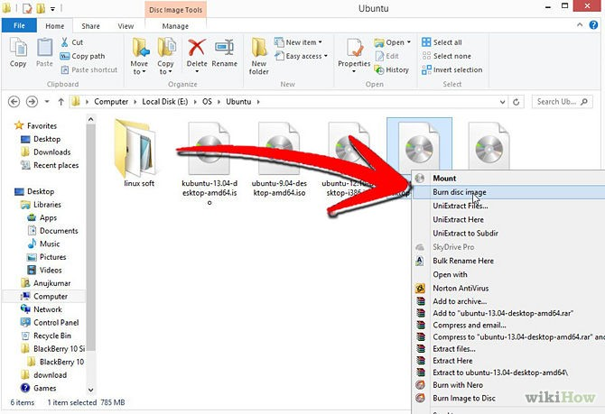
3. Inicia desde el CD. Una vez que lo hayas grabado, reinicia la computadora y elige iniciar la computadora desde el disco. Quizá tengas que cambiar las preferencias de arranque presionando la tecla Configuración (Setup) mientras que la computadora se está reiniciando. Por lo general, esa tecla es F12, F2 o Supr.
4. Prueba Ubuntu antes de instalarlo. Luego de haber iniciado la PC desde el CD, podrás elegir la opción de probar Ubuntu sin instalarlo. De esa forma, el sistema operativo se ejecutará desde el disco, permitiéndote explorar el diseño.
Abre la carpeta de Muestras para ver cómo Ubuntu maneja los archivos y para explorar el sistema operativo.
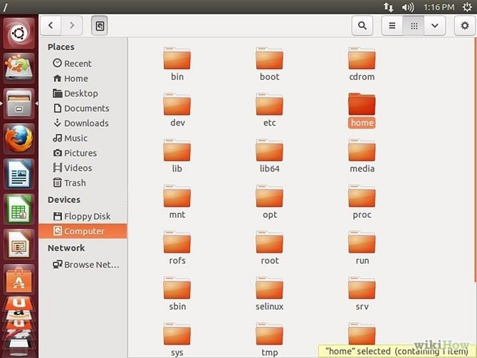
Luego de observar todo, abre el archivo de Instalación en el escritorio.
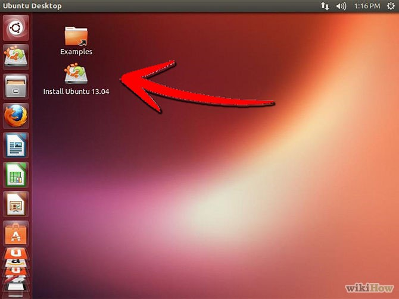
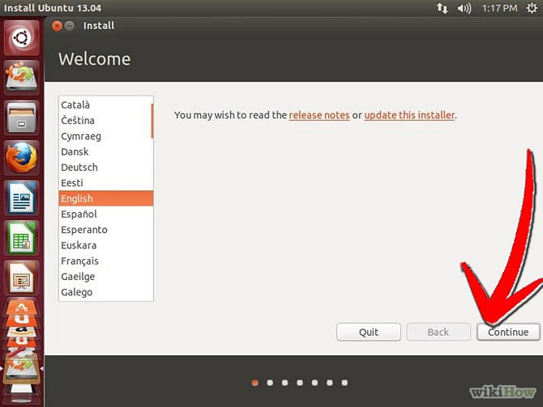
5. Instala Ubuntu. Para ello, la computadora necesita al menos 4,5 GB de espacio libre, aunque es probable que quieras más espacio para instalar programas y crear archivos. Si realizas la instalación en una computadora portátil, asegúrate de que esté conectada a la corriente eléctrica, ya que el proceso puede agotar la batería más rápido que lo normal.
Marca la opción “Descargar actualizaciones automáticamente” e “Instalar software de terceros”. Esto último te permitirá reproducir archivos MP3 y mirar videos Flash (como los de YouTube).
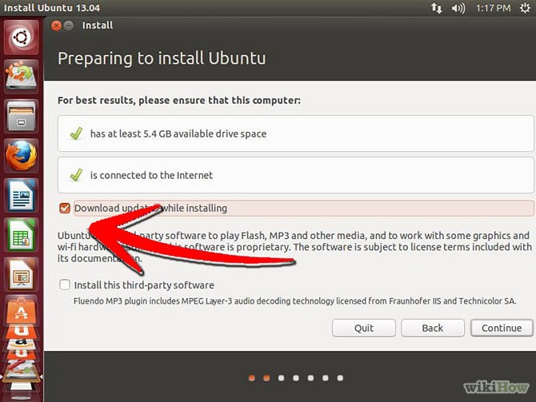
6. Configura la conexión inalámbrica. Si tu computadora no está conectada a Internet a través de Ethernet, puedes configurar la conexión inalámbrica en el siguiente paso.
Si no tienes una conexión a Internet, presiona el botón Retroceder luego de configurar la conexión inalámbrica para que puedas habilitar las actualizaciones automáticas.
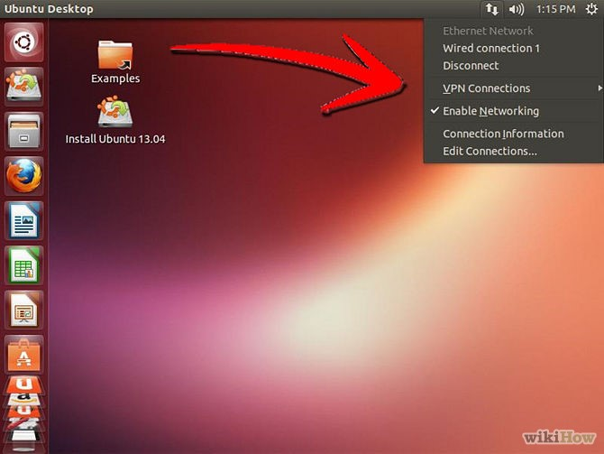
7. Elige qué hacer con tu sistema operativo actual. Si tienes instalado Windows, puedes elegir alguna de las opciones sobre cómo instalar Ubuntu; por ejemplo, puedes instalarlo junto con Windows o sustituir Windows por Ubuntu.
Si lo instalas junto con la versión de Windows, podrás elegir el sistema operativo que deseas ejecutar cada vez que reinicies la computadora. Los archivos y los programas de Windows permanecerán intactos.
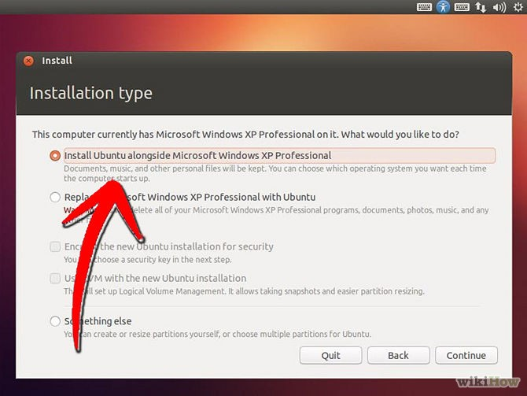
8.Si cambias Windows por Ubuntu, se borrarán todos los archivos, documentos y programas de Windows.
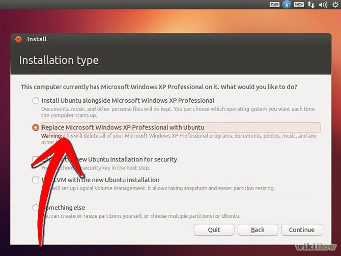
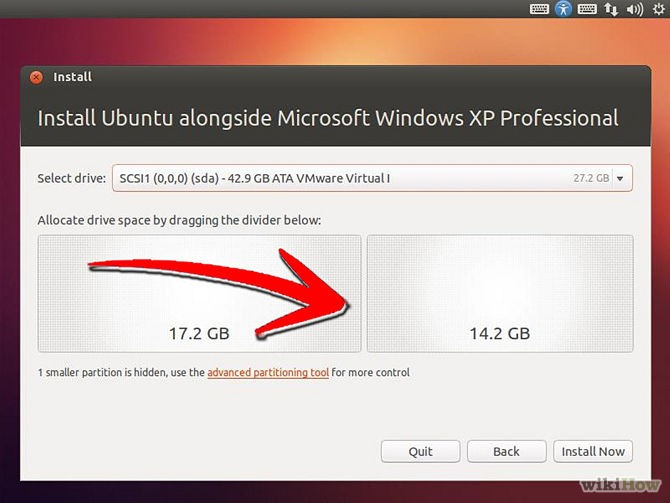
9. Elige la ubicación. Esto se hace automáticamente si estás conectado a Internet. Verifica que la zona horaria que muestra es la correcta y luego haz clic en continuar.
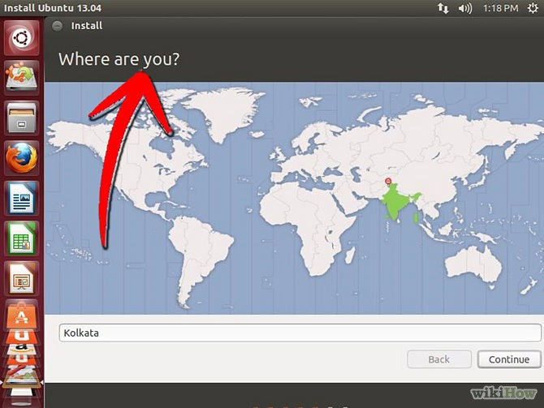
10. Establece la distribución del teclado. Puedes elegir desde una lista de opciones o hacer clic en Detectar Distribución de Teclado para que Ubuntu elija la opción correcta automáticamente.
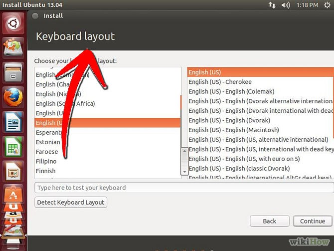
11. Ingresa la información de inicio de sesión. Ingresa tu nombre, el nombre de la computadora (el que se mostrará en la red), un usuario y una contraseña. Puedes configurar Ubuntu de forma que tengas que ingresar el usuario y la contraseña.
2. Graba el archivo ISO. Abre el programa de grabación que prefieras. Existen diversos programas gratuitos y pagos que pueden graban un archivo ISO en un CD o DVD.
Windows 7,8 y Mac OS X pueden grabar archivos ISO en un disco sin tener que descargar un programa aparte.
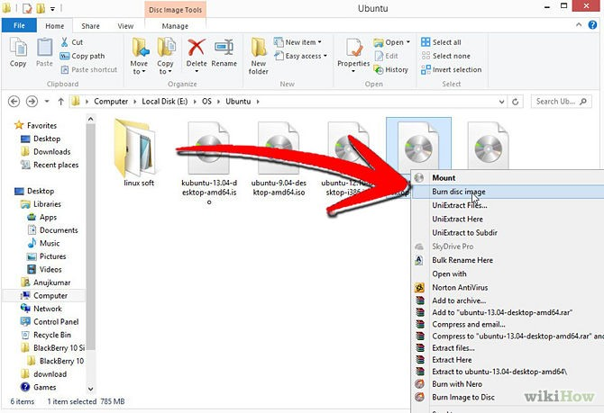
3. Inicia desde el CD. Una vez que lo hayas grabado, reinicia la computadora y elige iniciar la computadora desde el disco. Quizá tengas que cambiar las preferencias de arranque presionando la tecla Configuración (Setup) mientras que la computadora se está reiniciando. Por lo general, esa tecla es F12, F2 o Supr.
4. Prueba Ubuntu antes de instalarlo. Luego de haber iniciado la PC desde el CD, podrás elegir la opción de probar Ubuntu sin instalarlo. De esa forma, el sistema operativo se ejecutará desde el disco, permitiéndote explorar el diseño.
Abre la carpeta de Muestras para ver cómo Ubuntu maneja los archivos y para explorar el sistema operativo.
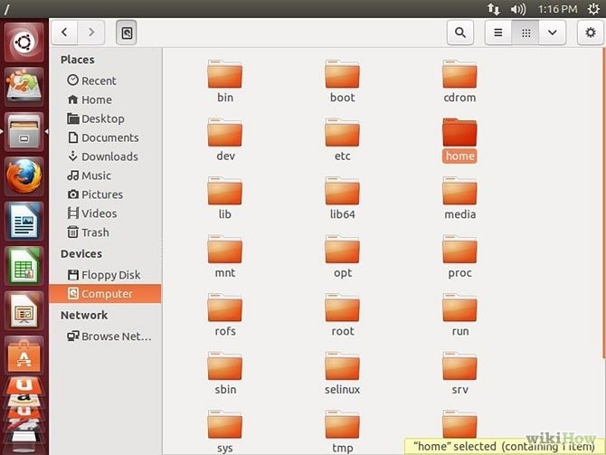
Luego de observar todo, abre el archivo de Instalación en el escritorio.
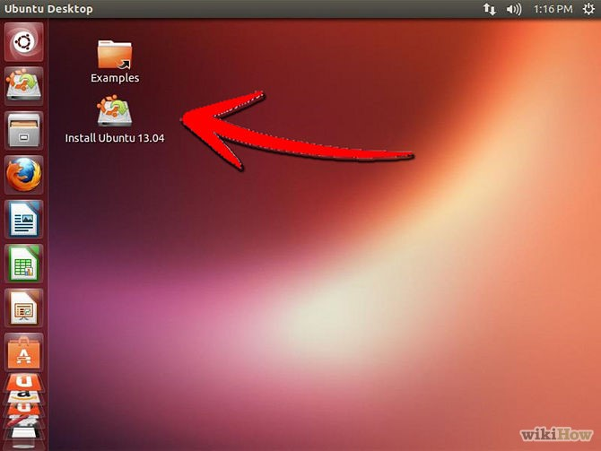
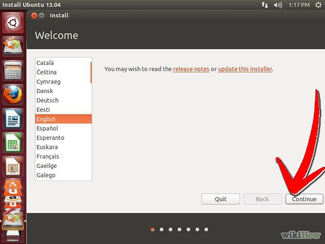
5. Instala Ubuntu. Para ello, la computadora necesita al menos 4,5 GB de espacio libre, aunque es probable que quieras más espacio para instalar programas y crear archivos. Si realizas la instalación en una computadora portátil, asegúrate de que esté conectada a la corriente eléctrica, ya que el proceso puede agotar la batería más rápido que lo normal.
Marca la opción “Descargar actualizaciones automáticamente” e “Instalar software de terceros”. Esto último te permitirá reproducir archivos MP3 y mirar videos Flash (como los de YouTube).
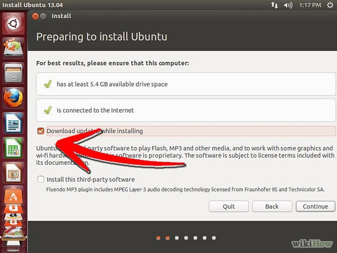
6. Configura la conexión inalámbrica. Si tu computadora no está conectada a Internet a través de Ethernet, puedes configurar la conexión inalámbrica en el siguiente paso.
Si no tienes una conexión a Internet, presiona el botón Retroceder luego de configurar la conexión inalámbrica para que puedas habilitar las actualizaciones automáticas.
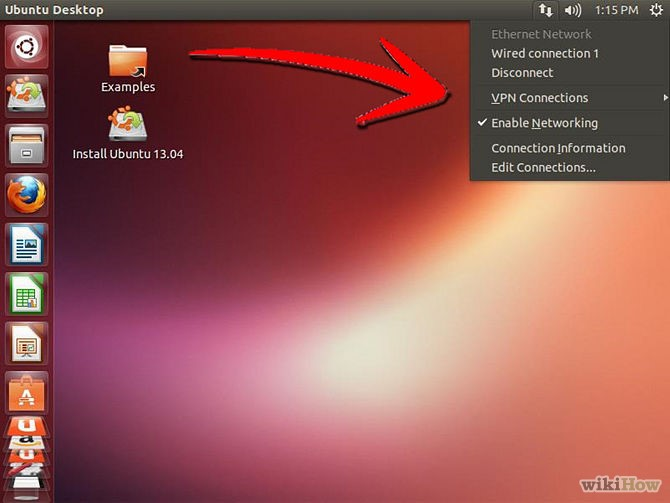
7. Elige qué hacer con tu sistema operativo actual. Si tienes instalado Windows, puedes elegir alguna de las opciones sobre cómo instalar Ubuntu; por ejemplo, puedes instalarlo junto con Windows o sustituir Windows por Ubuntu.
Si lo instalas junto con la versión de Windows, podrás elegir el sistema operativo que deseas ejecutar cada vez que reinicies la computadora. Los archivos y los programas de Windows permanecerán intactos.
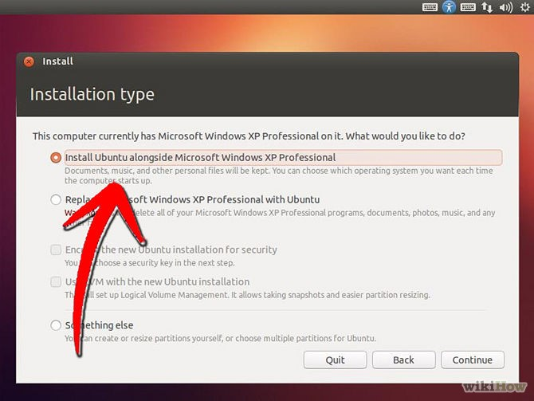
8.Si cambias Windows por Ubuntu, se borrarán todos los archivos, documentos y programas de Windows.
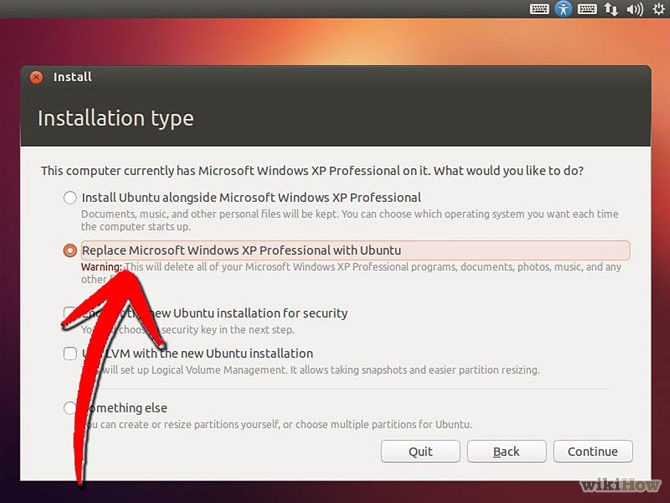
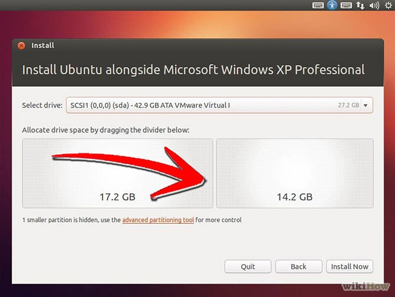
9. Elige la ubicación. Esto se hace automáticamente si estás conectado a Internet. Verifica que la zona horaria que muestra es la correcta y luego haz clic en continuar.
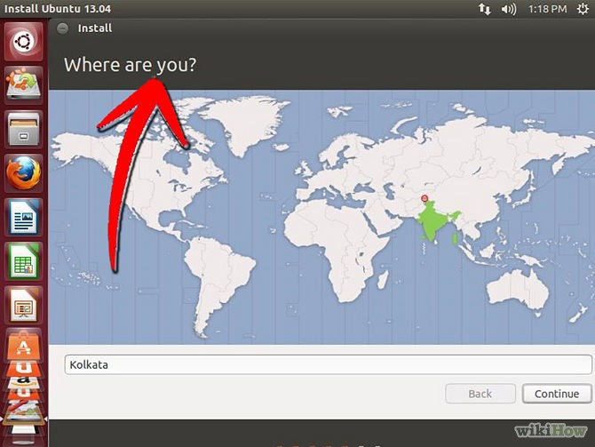
10. Establece la distribución del teclado. Puedes elegir desde una lista de opciones o hacer clic en Detectar Distribución de Teclado para que Ubuntu elija la opción correcta automáticamente.
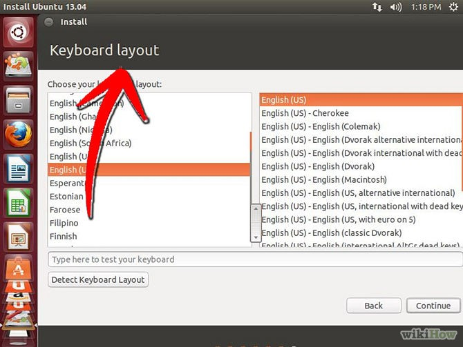
11. Ingresa la información de inicio de sesión. Ingresa tu nombre, el nombre de la computadora (el que se mostrará en la red), un usuario y una contraseña. Puedes configurar Ubuntu de forma que tengas que ingresar el usuario y la contraseña.
 12. Espera a que finalice el proceso de instalación. La instalación comenzará luego de que hayas ingresado la información de inicio. Tendrás que reiniciar la computadora cuando finalice el proceso para poder ejecutar Ubuntu.
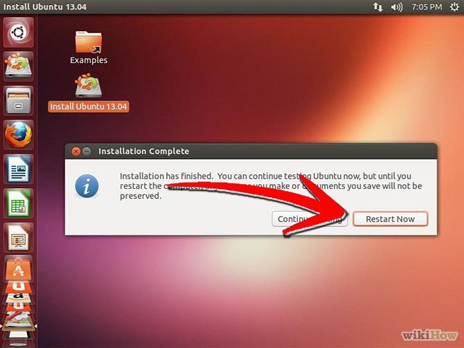
12. Espera a que finalice el proceso de instalación. La instalación comenzará luego de que hayas ingresado la información de inicio. Tendrás que reiniciar la computadora cuando finalice el proceso para poder ejecutar Ubuntu.
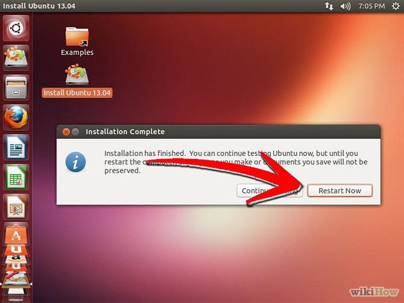